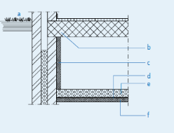

Vloerisolatie
28 May, 2024
23:23
Aaa
Een open retour werd veel toegepast in de jaren 70 begin 80, de mensen kozen destijds veelal voor plavuizen vloertegels en om de vloer minder koud te laten aanvoelen werd er dan gekozen voor een open retoursysteem, in de vloer van de woonkamer en hal werden de vloerroosters aangebracht (open verbinding kruipruimte) en de luchtverwarmer stond op een open sparing in vloer waarbij de luchtverwarmer vrij de lucht retour kon zuigen via de kruipruimte. In de luchtverwarmer zit een stoffilter die de ongewenste stof tegenhoudt en zo weer schoon kon inblazen via het aanvoerkanaal naar de desbetreffende uitblaasroosters. Het voordeel bij een openretour dat de vloer in een verwarmde ruimte ligt en hierdoor niet koud meer aanvoelt. De kruipruimte heeft dus dezelfde temperatuur als de woonkamer. Onderstaand montagedetail open retoursysteem

From <https://econvice.nl/luchtverwarming/open-retoursysteem/>
Created with OneNote.